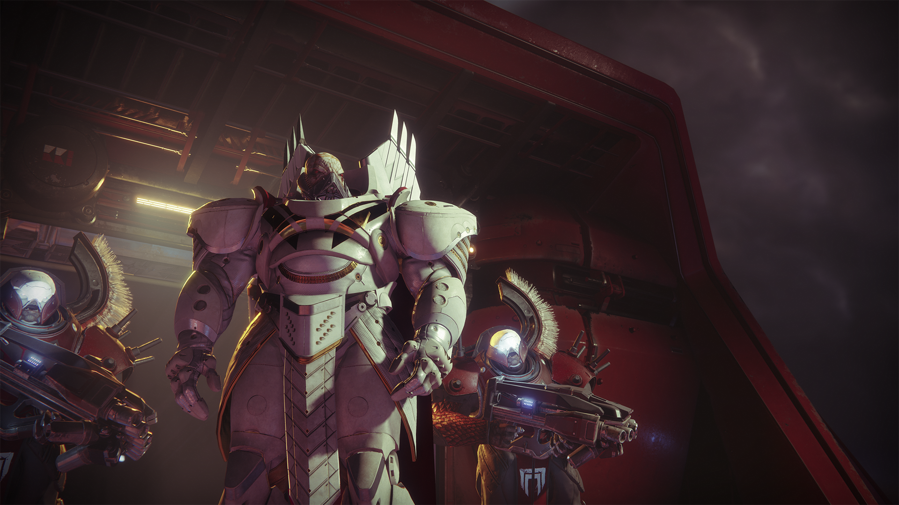
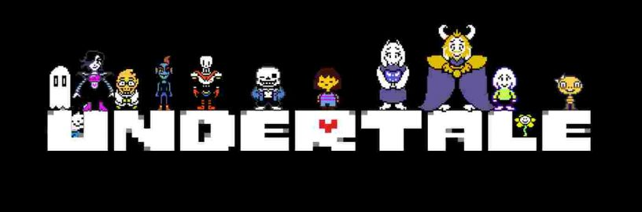
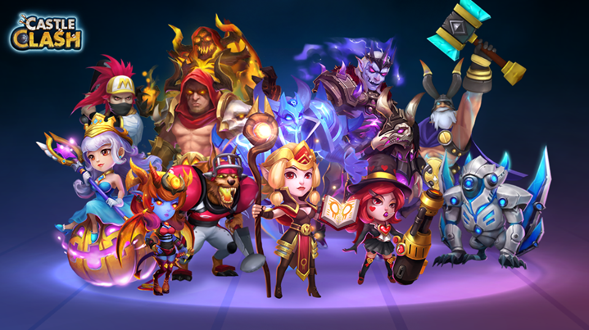

Videospiele sind schon lange teil der Unterhaltungsbranche. Seien es die Klassiker wie Tetris oder Pac-Man oder die neueren Spiele wie Anthem, Days Gone oder auch Devil May Cry 5.
Zudem gibt es auch die Möglichkeit nicht nur an einem PC, sondern auch an Konsolen die Videospiele zu spielen.
Persönlich spiele ich auf der PS4, besitze jedoch auch Spiele am PC. 3 von den Spielen werde ich kurz vorstellen.
Destiny 2
Auf: PS4

Destiny 2 ist ein MMO RPG Shooter von dem Entwicklerstudio Bungie. Es ist der Nachfolger des Spieles Destiny, war damals jedoch kein würdiger Nachfolger.
Heutzutage ist der Content des Spiels jedoch gestiegen, mag dies zwar durch Erweiterungen und DLCs geschehen sein, welche Geld kosten, und es hat durch einige
Aktionen wie die Veröffentlichung von Forsaken und einem Zeitraum um das Basisspiel gratis zu bekommen die Community vergrößert.i
Zudem gibt es nun mehr als 3300 Gegenstände zu ergattern (Einige kann man jedoch nichtmehr bekommen), wovon die Rüstungen und Waffen ebenfalls Randomrolls haben können.
Zu guter Letzt sind einige der Gegenstände kosmetisch um seinen Charakter individuell mit Farbe zu beschmücken.
Und all diese Gegenstände sind auch nötig, da die Hüter gegen einige Feinde antreten müssen wie z. B. die Kabale, die Vex, die Bessesenen oder auch im PvP Modus gegeneinander!
Auf: PC

Undertale ist ein Indiegame RPG von einem einzelnem Entwickler namens Toby Fox. Es geht um den Spieler, welcher ein Kind ist, das versucht aus dem sogenannten Untergrund zu fliehen.
Während man das Spiel spielt, hat man 3 Möglichkeiten. Nr 1. ist das man niemanden tötet, Nr 2. ist das man die Gegner tötet die einen in den Weg kommen und Nr 3. ist das man alle tötet.
Jedoch gibt es nur für Option 1 und 3 ein spezielles Ende, für 1 das True Ending und für 3 das Genocide Ending.
Castle Clash
Auf: Handy

Von Konsole auf PC und nun zum Handy, Castle Clash ist von dem Entwicklungsstudio I Got Games und ist ein kleineres Strategie Spiel.
In dem Spiel geht es darum seine Festung aufzubauen und Truppen auszubilden uhm ... hey, kenne ich das nicht irgendwo her? Vielleicht, aber da kommt das größte Spiel Element von Castle Clash, die Helden!
Helden können mit so genanten Edelsteinen erworben werden, welche zwar gekauft werden können, aber es auch für Aktivität im Spiel und spezielle Quests gibt.
Mit den Helden kann man nun Dungeons Spielen oder sich alleine oder mit der Hilfe von anderen Spielern gegen Horden von Gegner Kämpfen oder aber auch große Bosse erledigen.
Helden haben verschiedene individuelle Fähigkeiten, z. B. Helden zu heilen, einen Wirbel der Zerstörung um sich zu erschaffen, Geschwindigkeit von Verbündeten zu erhöhen und vieles mehr.
Alle Gezeigten Bilder gehören den Entsprechenden Erstellern und sind keineswegs von mir selber erstellt worden!